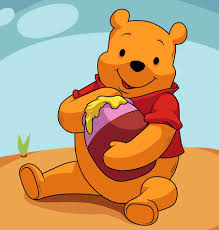

Cartoons Timeline!
-
Jan
-
12
 SpongeBob SquarePants
SpongeBob SquarePantsSpongeBob SquarePants is an American animated television series created by marine biologist and animator Stephen Hillenburg for Nickelodeon. The series chronicles the adventures and endeavors of the title character and his various friends in the fictional underwater city of Bikini Bottom. The series' popularity has made it a media franchise, as well as the highest rated series to ever air on Nickelodeon, and the most distributed property of MTV Networks.
-
15
Winnie the PoohWinnie-the-Pooh, also called Pooh Bear, is a fictional anthropomorphic teddy bear created by English author A. A. Milne. The first collection of stories about the character was the book Winnie-the-Pooh (1926), and this was followed by The House at Pooh Corner (1928). Milne also included a poem about the bear in the children's verse book When We Were Very Young (1924) and many more in Now We Are Six (1927).
23